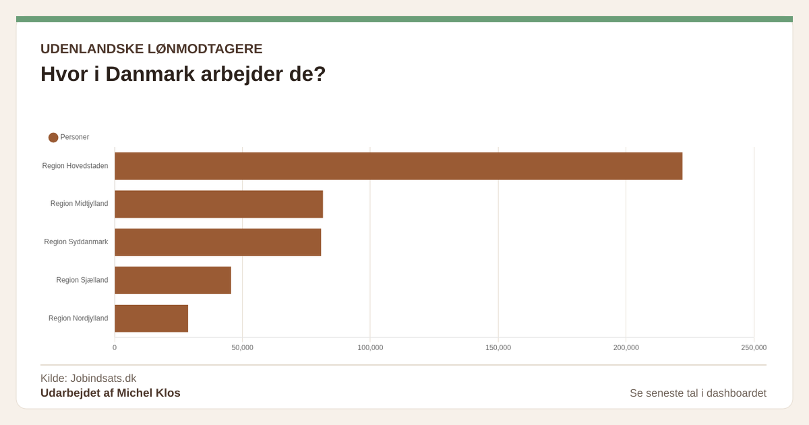

Michel Klos | Udenlandske lønmodtagere i Danmark
Hvor i Danmark arbejder de?
Åbner den valgte graf. Du kan fortsætte med at udforske tallene i dashboardet.

Michel Klos | Udenlandske lønmodtagere i Danmark
Åbner den valgte graf. Du kan fortsætte med at udforske tallene i dashboardet.
